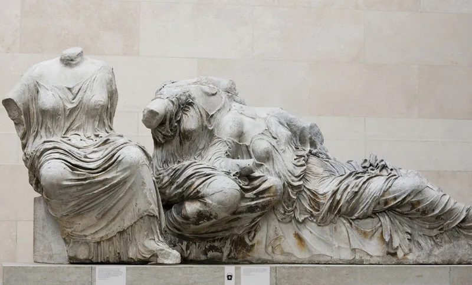

In the 18th century the so-called Grand Tour became a rite of passage for aristocratic young men. The journey typically involved three or four years of travel around Europe and included an extensive sojourn in Italy, as Rome was considered the ultimate destination for what might now be characterized as cultural tourism.
The Scottish painter, archaeologist, and art dealer Gavin Hamilton, one of the era’s cultural power brokers, championed the idea that “the most valuable acquisition a man of refined taste can make is a piece of fine Greek sculpture.” Hamilton’s opinion was widely accepted and spurred the development of a highly lucrative antiquities market. The British end of this market was largely dominated by Hamilton himself and by two dealers, Englishman Thomas Jenkins and Scot James Byres. The most notable collector was Charles Townley, though his collection was later overshadowed by the so-called Elgin Marbles, collected by the British ambassador to the Ottoman Empire, Thomas Bruce, 7th earl of Elgin.
There were also important continental participants in the Roman art market, including German archaeologist Baron Philip von Stosch and Italian artist Giovanni Battista Piranesi. To Rome’s south the presiding figure was Sir William Hamilton, the British envoy to the Neapolitan court. His collection of Greek vases, a catalog of which was published by the Society of the Dilettanti, was of seminal importance to Neoclassicism.
Venice also continued to be an important art market during the 18th century. Notable dealers included the British consul in Venice, Joseph Smith, the principal agent for Canaletto, and Italian intellectual Francesco Algarotti, who acted on behalf of Frederick II (the Great) of Prussia. There was also a significant trade in fans and Venetian glass. Florence also had a lively grand tourist market, particularly for pietra dura and scagliola table tops; all’antica bronzes by Giovanni Zoffoli, Francesco Righetti, and Giovanni Francesco Susini; and Old Master paintings.